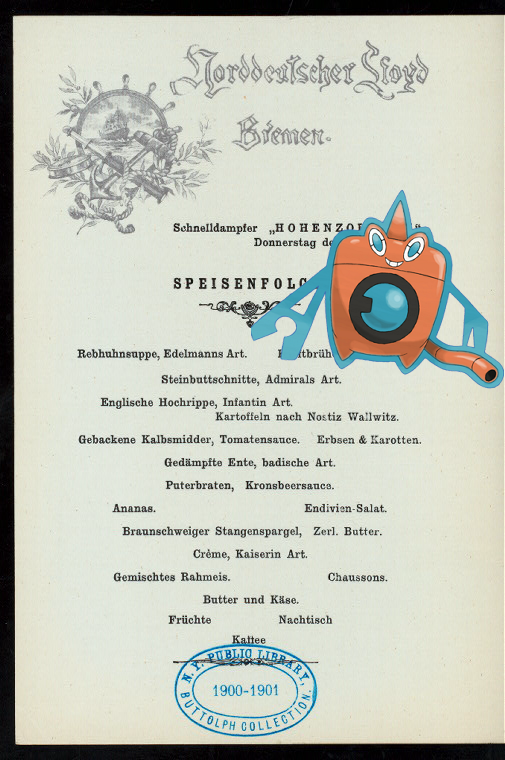

Pokémon in the NYPL archives
2018-2-13 16:10:08
;
Map of Moscovy, Poland, Little Tartary, and ye Black Sea &c.
.
2018-2-13 14:10:06
Weepinbell +
EM. 4171
!
2018-2-13 12:10:05
Inkay @
Paysage d'hiver avec maisons.
!
2018-2-13 10:10:04
Aggron @
Italy. Kingdom of the Two Sicilies, 1817-1819.
.
2018-2-13 08:10:04
Shellder |
The approach to Philae. 'In the time of the Ptolemies visitors from all parts of Egypt, travellers from distant lands, court functionaries from Alexandria, came annually in crowds to pay their vows at the tomb of the god.'
2018-2-13 06:10:04
Kakuna on
1. Pooruck Pranaiyam [Puraka pranayama]. 2. Kumbuck [Kumbhaka]. 3. Raichuck [Recaka].
!
2018-2-13 04:10:04
Zygarde, Corsola +
Wirt, author of the Life of Patrick Henry.
!
2018-2-13 02:10:08
Paras |
1809 March 17
!
2018-2-13 00:10:04

–
SPEISENFOLGE [held by] NORDDEUTSCHER LLOYD BREMEN [at] "SCHNELLDAMPFER ""HOHENZOLLERN""" (SS;)
2018-2-12 22:10:06
Turtwig –
DINNER [held by] RED STAR LINE [at] EN ROUTE ABOARD S.S.VADERLAND (SS;)
!
2018-2-12 20:10:05
Bellossom on
La vache a lait, représente le commerce de la Grande Bretagne [...]
.
5
|
4
|
3
|
2
|
1
|
0

 Weepinbell + EM. 4171!
Weepinbell + EM. 4171!![Turtwig – DINNER [held by] RED STAR LINE [at] EN ROUTE ABOARD S.S.VADERLAND (SS;)! http://digitalcollections.nypl.org/items/0fc50200-c53e-012f-c19e-58d385a7bc34](media/finding-dNQHIEjd.png)